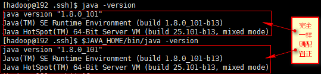

Centos安装部署
1、Centos下载、安装
2、创建hadoop用户
3、方便部署，为hadoop添加管理员权限
4、SSH配置
5、配置JAVA环境
JAVA环境配置较简单，这里不做详细记录，但是需要注意，因为Java有两种版本，即Oracle的JDK版本和OpenJDK版本，这里建议用OracleJDK版本。
Centos系统默认自带了OpenJDK，在配置完OracleJDK以后要检验系统确实用的是OracleJDK，最简单的检验方式是用如下图的两个命令：
